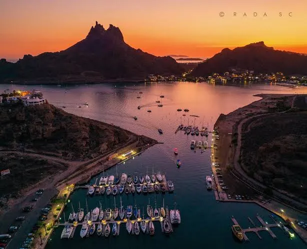
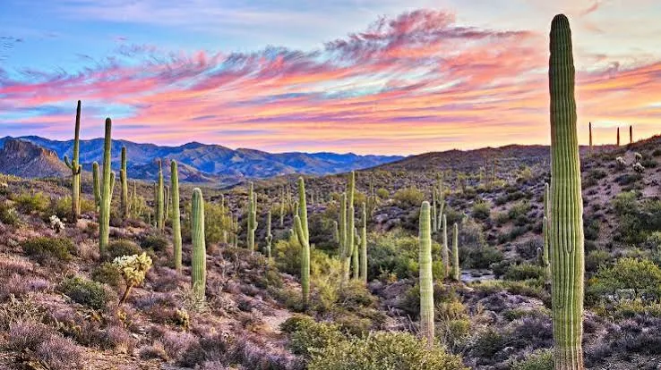
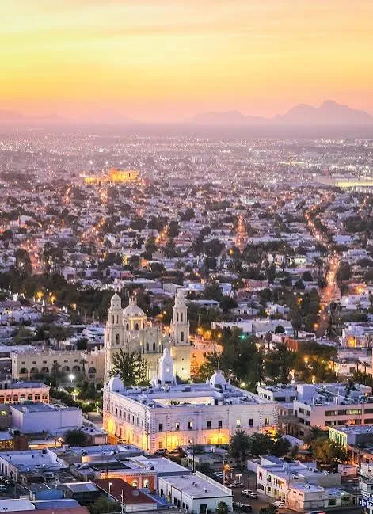

San Carlos
San Carlos is a coastal destination known for its beaches, clear waters, and spectacular views of Tetakawi Mountain. Visitors can enjoy outdoor activities, explore the coastline, and admire beautiful sunsets.
From beautiful beaches along the Sea of Cortez to impressive desert landscapes, Sonora offers many places to explore. Discover some of the state's most memorable destinations.
Explore these destinations to discover the natural beauty, local culture, and unique landscapes of Sonora, Mexico.

San Carlos is a coastal destination known for its beaches, clear waters, and spectacular views of Tetakawi Mountain. Visitors can enjoy outdoor activities, explore the coastline, and admire beautiful sunsets.

Puerto Peñasco, also known as Rocky Point, is a popular destination on the Sea of Cortez. Its sandy beaches, ocean views, and seafood make it a favorite place for visitors and families.

The Sonoran Desert features distinctive vegetation, impressive cacti, and landscapes adapted to a dry climate. It is home to a variety of plants and wildlife that make this region unique.

Hermosillo is the capital of Sonora and an important cultural and economic center. Visitors can explore local restaurants, public spaces, historic sites, and the traditions of the region.
What kind of place would you like to explore in Sonora? Choose a destination type below.